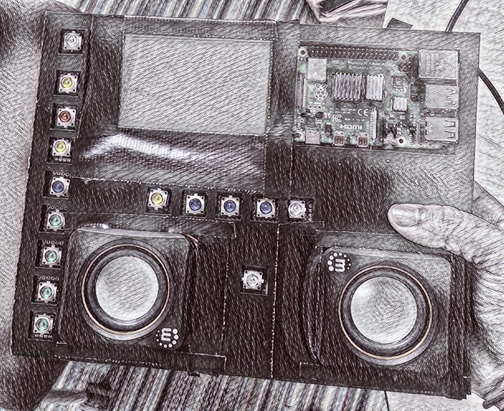

comments: I have worked on many different
code projects over the last few semesters, here are a my few of my favorites!
My most recent project was an audio sampler driven by a Raspberry Pi utilizing Python code for programming logic, and HTML/CSS for creating a user interface.
This project was completed over the course of around 8 weeks and required intensive planning, scheduling, and ingenuity.
There were many different ways we creatively solved our problems in hardware and software.
If you are interested in how I contributed to this project or have any questions feel free to send me an email.

comments: I have worked on many different code projects over the last few semesters, here are a my few of my favorites! My most recent project was an audio sampler driven by a Raspberry Pi utilizing Python code for programming logic, and HTML/CSS for creating a user interface.
This project was completed over the course of around 8 weeks and required intensive planning, scheduling, and ingenuity. There were many different ways we creatively solved our problems in hardware and software. If you are interested in how I contributed to this project or have any questions feel free to send me an email.